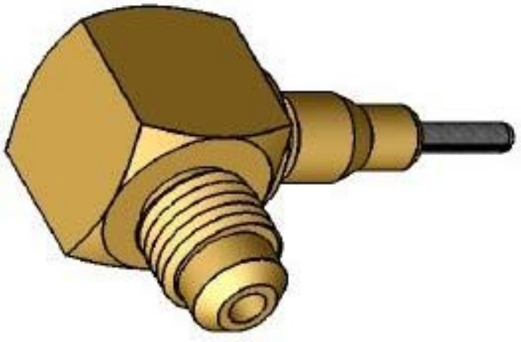
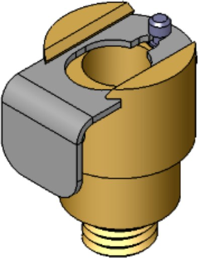
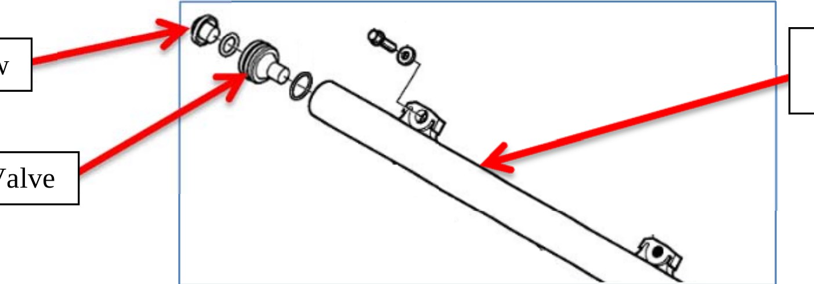

Doc no. MOC-TSB-14-11 // Vol. 14 No. 11 // Sep 11, 2014 // Fuel
Fuel Service Adapter for 3.0L Volvos
MOC has developed a new Fuel Adapter to service various Volvo vehicles. This adapter connects to the valve at the end of the fuel rail.
What's new
To use this new adapter, the Volvo 3.2L Female Quick Disconnect Fuel Adapter (Part # 73038) will also be needed.
Below is a reference diagram of a fuel rail showing where the adapters above will connect in order to perform a service.
Remove the screw from the valve and connect the Volvo Quick Disconnect Fuel Adapter (Part # 73038). Connect the NEW Volvo 3.0L Fuel Adapter (Part # 73047) to the Quick Disconnect Adapter.
The list below shows the vehicles that can be serviced with this new adapter.
Volvo S60 3.0l 6 cylinder Turbo 2011-2015 Volvo S60 3.0l 6 cylinder Turbo (t6) 2011 Volvo S80 3.0l 6 cylinder Turbo 2008-2015 Volvo S80 3.0l 6 cylinder Turbo (t6) 2008-2015 Volvo S80 3.2l 6 cylinder 2007-2015 Volvo S80L 3.0l 6 cylinder Turbo 2008-2014 Volvo V60 3.0l 6 cylinder Turbo 2011-2015 Volvo V70 3.0l 6 cylinder Turbo 2008-2014 Volvo V70 3.0l 6 cylinder Turbo (t6) 2008-2010 Volvo V70 3.2l 6 cylinder 2008-2014 Volvo XC60 3.0l 6 cylinder Turbo 2009-2015 Volvo XC60 3.0l 6 cylinder Turbo (t6) 2010-2011 Volvo XC60 3.2l 6 cylinder 2010-2015 Volvo XC70 3.0l 6 cylinder Turbo 2009-2015 Volvo XC70 3.0l 6 cylinder Turbo (t6) 2009-2011 Volvo XC70 3.2l 6 cylinder 2008-2015 Volvo XC90 3.2l 6 cylinder 2007-2014
The original prints this bulletin as Vol. 14 No. 10; it is filed as No. 11.
Contact
For more information, contact the Machine & Equipment Department at 866.244.6621.



Part numbers
| Part No. | Description | Notes |
|---|---|---|
| 73038 | Volvo Quick Disconnect Fuel Adapter | |
| 73047 | Volvo 3.0L Fuel Adapter |